BACK
PERFORM
SETTINGS
TUTORIAL
SETTINGS
Mode:
Time:
Reveal:
TUTORIAL
THE SECRET:
Just by one unnoticeable touch on the screen you'll be able to tell your smartphone which of the 52 cards in the deck is the one you want to make appear.
HOW IT WORKS:

As you can see in the picture above, the screen will be divided in 3 columns and 5 rows. The first 13 rectangles are invisible buttons that will set the value of the card as soon as they are touched.
Right after touching one of the invisible buttons, without releasing your finger, swipe in one of the 4 directions:
And then release to indicate the suit of the card. That's it! Your card will appear after preset time passes. So, for example, if you swipe to the left starting at the 8th button, the 8 of clubs will appear.
THINGS TO KNOW
• At the right bottom corner, you'll find another invisible button: the RESET button. This button will be helpful in case you doubt you selected the right card. Just by touching the RESET button it will cancel the selected card to appear and will make all buttons enabled again.
• As soon as you touch/tell your device which card you want to make appear, all buttons will be disabled (except the RESET button), so you or the spectator can touch the screen to verify your smartphone is off (while time lapse is running).
• Jokers are not available because its design varies from brand to brand. So remember to remove them from the deck before you start your performance.
SETTINGS
In the settings panel you can select the following options:
MODE:
• Learning: in this mode you'll be able to see where buttons are placed on the screen. This mode is the best choice for you to start practicing. Touching the revealed card will bring you back to home menu.
• Perform: this is the mode you use to perfom the trick to an audience. Buttons are invisible, making your smartphone look like it's off.
TIME: specifies the time lapse between setting the card and the revealing action.
REVEAL: specifies the way you want the card to be revealed (Instantly, Slowly, Growing).
ROUTINE
After you know what card you have to make appear (could be a forced card or a truly free selection that you manage to control), grab your phone and show the audience is turned off by touching/swiping many times in many places on the screen. But make sure the first touch/swipe sets the selected card.
Also, after you set a card, you could let spectators touch the screen to verify that nothing strange is going on, your phone is just off.
Remember time lapse will start running immediately after you set a card. So, set the right amount of time you need in order to show the audience that your smartphone is off, before your selected card appears.
Just by one unnoticeable touch on the screen you'll be able to tell your smartphone which of the 52 cards in the deck is the one you want to make appear.
HOW IT WORKS:

As you can see in the picture above, the screen will be divided in 3 columns and 5 rows. The first 13 rectangles are invisible buttons that will set the value of the card as soon as they are touched.
Right after touching one of the invisible buttons, without releasing your finger, swipe in one of the 4 directions:
And then release to indicate the suit of the card. That's it! Your card will appear after preset time passes. So, for example, if you swipe to the left starting at the 8th button, the 8 of clubs will appear.
THINGS TO KNOW
• At the right bottom corner, you'll find another invisible button: the RESET button. This button will be helpful in case you doubt you selected the right card. Just by touching the RESET button it will cancel the selected card to appear and will make all buttons enabled again.
• As soon as you touch/tell your device which card you want to make appear, all buttons will be disabled (except the RESET button), so you or the spectator can touch the screen to verify your smartphone is off (while time lapse is running).
• Jokers are not available because its design varies from brand to brand. So remember to remove them from the deck before you start your performance.
SETTINGS
In the settings panel you can select the following options:
MODE:
• Learning: in this mode you'll be able to see where buttons are placed on the screen. This mode is the best choice for you to start practicing. Touching the revealed card will bring you back to home menu.
• Perform: this is the mode you use to perfom the trick to an audience. Buttons are invisible, making your smartphone look like it's off.
TIME: specifies the time lapse between setting the card and the revealing action.
REVEAL: specifies the way you want the card to be revealed (Instantly, Slowly, Growing).
ROUTINE
After you know what card you have to make appear (could be a forced card or a truly free selection that you manage to control), grab your phone and show the audience is turned off by touching/swiping many times in many places on the screen. But make sure the first touch/swipe sets the selected card.
Also, after you set a card, you could let spectators touch the screen to verify that nothing strange is going on, your phone is just off.
Remember time lapse will start running immediately after you set a card. So, set the right amount of time you need in order to show the audience that your smartphone is off, before your selected card appears.
A
2
3
4
5
6
7
8
9
10
J
Q
K
RESET
Thank you for purchasing Magic Card Reveal!
I hope you enjoy performing with it. Check out the tutorial before you start using it.OK